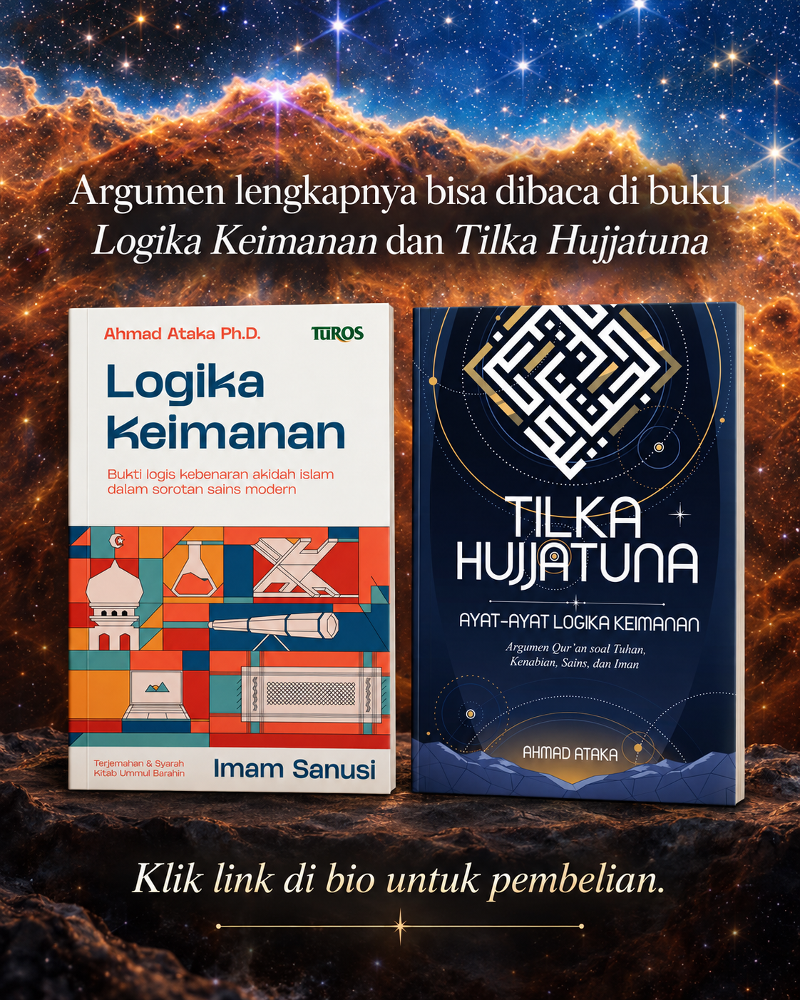

Menimbang satu keberatan
Keberadaan Tuhan Perlu Bukti Empiris?
Sains, logika, dan apa yang betul-betul membuktikan Tuhan
→ untuk mulai · O untuk melihat seluruh slide
Alur reel: standar bukti
01Peta Pembahasan
01AKeberatan terhadap bukti ketuhanan
Mimpi religius, falsifiabilitas, bukti empiris, dan tuntutan pesan melalui JWST.
Membedah struktur argumen
Setiap klaim diuji sebagai qiyās: bentuk, premis, dan titik persoalannya.
Fondasi kepastian
Premis ḍarūrī, premis naẓarī, dan enam mabādiʾ al-yaqīniyyāt.
Burhān keberadaan Tuhan
Dalil imkān dan ḥudūts menuju kesimpulan Wājib al-Wujūd.
Sifat dan implikasi ketuhanan
Fāʿil Mukhtār, nonmaterialitas, keesaan, dan kebebasan Tuhan.
Kembali ke pertanyaan awal
Mengapa Tuhan tak terlihat, dan bagaimana alam menjadi bukti yang memadai?
Alur reel: tantangan dan kesimpulan
02Satu reel, sembilan argumen berbeda
03Mimpi yang bertentangan
Bisakah pengalaman privat menentukan agama yang benar?
Falsifiability
Apakah semua pengetahuan harus bisa difalsifikasi?
Eksklusivitas empiris
Benarkah hanya bukti saintifik yang valid?
Repeatability
Apakah peristiwanya atau metodenya yang harus berulang?
Teori final fisika
Apakah membuktikan Tuhan menyelesaikan fisika?
Divine hiddenness
Apakah kasih Tuhan mewajibkan bukti tertentu?
Penangguhan kepercayaan
Apakah satu bukti yang tiada berarti semua bukti tiada?
Sinyal membuktikan Tuhan
Apa yang sebetulnya dibuktikan pesan kosmik?
Banyak konsep Tuhan
Apakah semua konsep Tuhan lantas setara?
Di mana qiyās bisa keliru?
04Apakah bentuk inferensinya valid? Jika tidak, kesimpulan tak pernah mengikuti premis.
Apakah premisnya benar? Bentuk yang valid belum menjamin kesimpulan benar jika materinya salah.
Redaksi P dan Q tidak boleh berubah di tengah jalan. Negasi hanya menegasikan proposisi yang sama.
1. Mimpi religius yang bertentangan
05Versi sederhana
Jika mimpi bisa mengarahkan orang kepada agama yang saling bertentangan, bagaimana mungkin mimpi menentukan agama mana yang benar?
Jawaban singkatnya: betul! Mimpi tak cukup jika berdiri sendiri. Tapi, dari sini tidak lantas seluruh bukti agama gugur. Argumen ini tidak membatalkan:
- argumen metafisik,
- testimoni mutawātir,
- burhān kenabian.
2. Falsifiability
06Versi sederhana
Suatu klaim hanya layak dipercaya jika dapat dibuktikan salah secara empiris. Pengalaman metafisik tidak memenuhi syarat ini. Benarkah demikian?
Falsifiability empiris merupakan kriteria bagi hipotesis saintifik, bukan definisi seluruh pengetahuan. Tidak menjadi teori empiris tidak sama dengan salah atau tidak rasional. Burhān tetap dapat dibatalkan dengan menunjukkan bentuknya invalid atau premisnya keliru.
3. Eksklusivitas bukti empiris
07Versi sederhana
“Saya akan percaya Tuhan hanya jika ada bukti empiris yang bisa diuji.” Masalahnya: mengapa hanya bukti empiris?
Di mana kelirunya? “Bukti publik” tidak identik dengan eksperimen. Kita pun mengetahui hukum logika tanpa laboratorium. Burhān ketuhanan berangkat dari alam yang kita indra, lalu akal menyimpulkan adanya Wājib al-Wujūd.
4. Repeatability
08Versi sederhana
Bukti empiris harus dapat diulang. Mimpi tidak dapat diulang. Maka, mimpi bukan bukti ilmiah publik.
Betul. Tapi, perhatikan kesimpulannya: “bukan bukti ilmiah publik”, bukan “bukan bukti dalam makna apa pun”. Bahkan dalam sains, peristiwa historis tak perlu berulang. Yang perlu diulang adalah metode pemeriksaannya.
5. “Membuktikan Tuhan menyelesaikan fisika”
09Versi sederhana
Jika Tuhan betul-betul berhasil dibuktikan secara ilmiah, bukankah seluruh persoalan fisika otomatis terjawab?
Tentu tidak! Mengetahui adanya sebab ontologis tidak sama dengan mengetahui seluruh mekanisme fisik. Tuhan bukan variabel tersembunyi dalam teori fisika. Wājib al-Wujūd menjawab mengapa realitas mumkin membutuhkan sebab.
6. Divine hiddenness dan tuntutan sinyal JWST
10Versi sederhana
Kalau Tuhan baik dan ingin manusia mengenal-Nya, mengapa Ia tak mengirim sinyal yang jelas melalui JWST?
Benarkah kasih Tuhan mewajibkan-Nya memberi bukti dalam bentuk, waktu, dan tingkat yang manusia tuntut? Tidak ada alasan untuk itu. Apalagi jika bentuk yang diwajibkan adalah sinyal astronomis!
7. Ketiadaan bukti dan penangguhan kepercayaan
11Versi sederhana
“Saya sudah mencari tapi belum menemukan bukti yang cukup. Maka, saya tetap agnostik-ateis.”
Masalahnya ada pada kata “bukti”. Tiadanya satu jenis bukti yang salah sasaran tidak sama dengan tiadanya seluruh justifikasi. Burhān imkan atau ḥudūth perlu diperiksa lebih dulu.
Dan tentu saja, tidak mengafirmasi G berbeda dari mengafirmasi tidak-G.
8. “Sinyal kosmik membuktikan Tuhan”
12Versi sederhana
Seandainya JWST menangkap pesan ilahiah dan komunitas ilmiah memverifikasinya, apakah Tuhan akhirnya terbukti?
Apa yang sebetulnya dibuktikan sinyal itu? Maksimal, adanya pengirim yang cerdas dan kuat. Dari mana kita tahu ia Wājib al-Wujūd, nonmaterial, esa, dan Pencipta alam? Sains tak bisa menunjukkan itu.
9. Banyaknya konsep Tuhan
13Versi sederhana
Pengalaman religius dipakai untuk mendukung banyak konsep Tuhan. Tidakkah ini berarti kita tak pernah tahu Tuhan yang mana?
Jawaban singkatnya: pengalaman privat memang tidak cukup. Tapi banyaknya konsep Tuhan tidak membuat semuanya setara. Sifat Wājib al-Wujūd justru menjadi kriteria untuk menegasikan semua entitas yang mumkin sebagai Tuhan.
Jadi, premis mana yang kita terima?
14Betul
- Mimpi privat tidak menentukan agama yang benar.
- Klaim agama memerlukan burhān yang dapat diperiksa.
- Bukti ilmiah publik memerlukan pemeriksaan independen.
- Klaim kontradiktif tidak mungkin semuanya benar.
Perlu diluruskan
- Falsifiability empiris berlaku khusus bagi klaim saintifik.
- Metode pemeriksaan perlu berulang, peristiwanya tidak selalu.
- Tiadanya seluruh justifikasi dapat membenarkan penangguhan.
- Pengalaman religius perlu ditempatkan setelah burhān.
Keliru
- Hanya sains empiris menghasilkan pengetahuan.
- Tuhan adalah objek material atau hipotesis fisika.
- Tiada sinyal JWST berarti tiada bukti Tuhan.
- Sinyal kosmik cukup membuktikan Wājib al-Wujūd.
- Membuktikan Tuhan menyelesaikan seluruh fisika.
Uji lapis kedua
Kok enak banget menolak premis?
Menolak premis bukan soal selera. Jika premisnya naẓarī, tampilkan qiyās pendukungnya—lalu telusuri sampai berujung pada premis ḍarūrī.
Apakah premis itu ḍarūrī atau naẓarī?
Jika naẓarī, apa kubrā, ṣughrā, dan natījah pendukungnya?
Panel berikut menulis P1/P2 secara eksplisit agar setiap dasar menunjuk kepada premis yang ditopangnya.
Fiṭriyyāt berarti qaḍiyyah yang qiyās-nya menyertainya. Karena itu, setiap pemakaiannya di bawah harus menyebut ḥadd awsaṭ.
Fondasi penilaian premis
Mabādiʾ al-yaqīniyyāt: dari mana burhān bermula?
Teks Isāghūjī
الْبُرْهَانُ هُوَ قِيَاسٌ مُؤَلَّفٌ مِنْ مُقَدِّمَاتٍ يَقِينِيَّةٍ لِإِنْتَاجِ الْيَقِينِ
“Burhān adalah qiyās yang tersusun dari premis-premis yaqīnī untuk menghasilkan keyakinan.”
وَالْيَقِينِيَّاتُ أَقْسَامٌ سِتَّةٌ
“Yaqīniyyāt terbagi menjadi enam.”
Mengapa ini penting?
Mabādiʾ al-yaqīniyyāt · 01
Tiga jalan pertama menuju kepastian
1 · Awwaliyyāt
Akal memastikan hukumnya cukup dengan memahami kedua sisi proposisi. Tidak perlu observasi atau ḥadd awsaṭ tambahan.
Contoh Isāghūjī: satu adalah setengah dari dua; keseluruhan lebih besar daripada bagiannya.
2 · Musyāhadāt
Akal menetapkan melalui indra lahir; atau melalui kesadaran batin, yang juga disebut wijdāniyyāt.
Contoh: matahari bersinar, api membakar; atau kita mendapati rasa takut dan harap dalam diri.
3 · Mujarrabāt
Kepastian lahir dari pengulangan pengindraan. Ia memuat qiyās tersembunyi: keteraturan yang terus terjadi menunjukkan suatu sebab.
Contoh klasik: konsumsi saqamūniyā berulang kali diikuti keluarnya empedu kuning.
Mabādiʾ al-yaqīniyyāt · 02
Tiga jalan berikutnya menuju kepastian
4 · Ḥadsiyyāt
Akal menangkap perantara penjelas sekaligus dengan natījah, melalui ḥads yang kuat—bukan tebakan tanpa alasan.
Contoh klasik: cahaya bulan berasal dari matahari, disimpulkan dari perubahan bentuk terangnya menurut posisinya.
5 · Mutawātirāt
Berita indrawi dari banyak jalur menghasilkan yakin ketika kesepakatan mereka untuk berdusta tidak masuk akal.
Contoh: adanya Makkah bagi orang yang belum pernah melihatnya. Ukurannya bukan angka baku, tetapi tercapainya yakin.
6 · Fiṭriyyāt
Akal menghukum melalui qiyās yang ḥadd awsaṭ-nya tidak menghilang ketika kedua sisi proposisi dipahami.
“Empat adalah genap”—karena empat terbagi menjadi dua bagian sama; setiap yang demikian adalah genap.
Mabādiʾ al-yaqīniyyāt · 03
Bagaimana enam kategori ini menopang burhān?
Contoh fiṭriyyah Isāghūjī
Ḥadd awsaṭ: “terbagi menjadi dua bagian sama.”
Ḍarūrī berarti tidak memerlukan qiyās baru untuk diketahui.
Karena enam kategori di atas merupakan mabādiʾ, semuanya diperlakukan sebagai akar ḍarūrī. Fiṭriyyāt tetap memuat struktur qiyās, tetapi qiyās dan ḥadd awsaṭ-nya hadir bersama proposisi—bukan hasil pencarian inferensial baru.
Karena itu, setiap premis yang disebut fiṭriyyah harus memperlihatkan ḥadd awsaṭ-nya. Jika perantaranya masih perlu dicari atau diperdebatkan, premis itu naẓarī dan qiyās pendukungnya harus dibuka lagi.
Deeper Look · 01
Mimpi privat: apa yang benar-benar gugur?
Premis yang diuji
“Mimpi privat, jika berdiri sendiri, tidak cukup menentukan agama yang benar.”Naẓarī
Sanad setiap premis
Deeper Look · 02
Apa yang sebenarnya dibatasi falsifiability?
Kubrā yang ditolak
“Setiap klaim yang tidak empirically falsifiable tidak layak diterima sebagai pengetahuan.”Naẓarī
Sanad setiap premis
Yang dapat mengikuti: “bukan teori saintifik.” Yang tidak mengikuti: “bukan pengetahuan” atau “pasti salah.”
Perluasan domain · kesalahan kategoriDeeper Look · 03
Dapatkah empirisme dibuktikan secara empiris?
Premis tersembunyi
“Hanya klaim yang dapat dibuktikan secara empiris yang layak disebut pengetahuan.”Naẓarī
Sanad setiap premis
Deeper Look · 04
Repeatability: peristiwa atau metode?
Premis yang diuji
“Mimpi privat bukan bukti ilmiah publik.”Naẓarī
Sanad setiap premis
Yang tidak mengikuti: “bukan bukti ilmiah publik” berarti “bukan bukti dalam makna apa pun”.
Diterima dalam domain sainsDeeper Look · 05
Sebab wujud bukan teori seluruh mekanisme
Premis yang ditolak
“Jika Tuhan terbukti, seluruh persoalan fisika otomatis terjawab.”Naẓarī
Sanad setiap premis
Deeper Look · 06
Dari kasih menuju kewajiban: mana dalilnya?
Kubrā yang ditolak
“Jika Tuhan sempurna kasih-Nya, nonresistant nonbelief mustahil ada.”Naẓarī
Sanad setiap premis
Deeper Look · 07
Tidak menemukan bukan berarti tidak ada
Premis yang ditolak
“Keberadaan Tuhan tidak memiliki justifikasi yang cukup.”Naẓarī
Sanad setiap premis
Deeper Look · 08
Sinyal membuktikan agen—atau Wājib al-Wujūd?
Premis yang diuji
“Sinyal publik dapat ditetapkan sebagai tindakan Tuhan, bukan agen kontingen.”Naẓarī
Sanad setiap langkah
Deeper Look · 09
Banyak kandidat tidak berarti tak ada jawaban
Premis yang diuji
“Pengalaman privat saja tidak cukup memilih konsep Tuhan yang benar.”Naẓarī
Sanad setiap premis
Namun “tidak semuanya benar” tidak berarti “semuanya salah”.
Diterima; skeptisisme total tidak mengikutiIndra, akal, dan burhān
25Apakah ini berarti bukti empiris tidak berguna? Tentu tidak! Indra menghadirkan data tentang alam, sedangkan akal menilai konsekuensi logisnya.
Indra menghadirkan alam
Kita mengamati realitas yang berubah, bermula, dan bisa memiliki beragam kemungkinan.
Akal menilai konsekuensinya
Sesuatu yang mumkin tak bisa menjelaskan mengapa satu kemungkinan tertentu mewujud.
Burhān mencapai Wājib
Artinya, kita membutuhkan Realitas Yang Wajib, tak menerima ketiadaan, dan tak membutuhkan sebab.
Burhān keberadaan Tuhan
Dari alam menuju Wājib al-Wujūd dan Fāʿil Mukhtār
Sekarang kita uji argumennya premis demi premis. Setiap kesimpulan naẓarī harus memiliki qiyās pendukung yang akhirnya bertumpu pada premis ḍarūrī.
Alam yang mumkin membutuhkan murajjiḥ.
Alam yang bermula membutuhkan muḥdits.
Pengadaan membutuhkan kuasa; penentuan membutuhkan kehendak.
Pencipta bertindak dengan pilihan, bukan sebagai sebab yang terpaksa.
Burhān Imam Sanusi dalam bentuk paling ringkas
27Teks Umm al-Barāhīn
أما برهان وجوده تعالى فحدوثُ العالم لأنه لو لم يكن له مُحدِث بل حدث بنفسه لزم أن يكون أحدُ الأمرين المتساويين مساويا لصاحبه راجحا عليه بلا سبب وهو محال
Bukti keberadaan-Nya adalah bermulanya alam. Jika alam muncul sendiri, salah satu dari dua kemungkinan yang setara akan terunggulkan tanpa sebab. Ini mustahil.
Versi sederhana
Alam bisa ada atau tidak ada. Faktanya, alam ada dan memiliki keadaan tertentu. Mengapa kemungkinan ini yang terwujud?
Jawaban “terjadi begitu saja” menerima tarajjuḥ bilā murajjiḥ: satu kemungkinan menang tanpa sesuatu yang menentukannya. Imam Sanusi menilainya mustahil secara rasional.
Dalīl al-imkān · 01
Mengapa alam disebut mumkin?
Yang hendak dibuktikan
“Alam dan keadaan-keadaannya bersifat mumkin.”Naẓarī
Sanad setiap premis
Natījah “alam mumkin” bersifat naẓarī karena diperoleh melalui qiyās di samping.
Fondasinya tersediaDalīl al-imkān · 02
Mengapa yang mumkin membutuhkan murajjiḥ?
Premis kunci
“Satu kemungkinan tidak terwujud sendiri di antara kemungkinan yang setara.”Ḍarūrī
Sanad setiap premis
Keberadaan murajjiḥ merupakan natījah naẓarī dari kedua premis.
Bukan asumsi “semua butuh sebab”Dalīl al-imkān · 03
Mengapa rantainya tidak berhenti pada mumkin lain?
Masalah lanjutan
Murajjiḥ pertama yang kita temukan bisa saja masih bersifat mumkin.Naẓarī
Sanad setiap premis
Dalīl al-imkān · 04
Ujungnya adalah Wājib al-Wujūd
Kesimpulan modal
“Ada sesuatu yang keberadaannya tidak dipinjam dari yang lain.”Naẓarī
Sanad setiap premis
Dalīl al-ḥudūts · 01
Versi sederhana: alam yang bermula membutuhkan muḥdits
Qiyās utama
“Alam bermula. Setiap yang bermula membutuhkan pengada.”Naẓarī
Sanad setiap premis
Karena itu, Imam Sanusi tidak berhenti pada qiyās ringkas ini.
Ṣughrā harus dijabarkanDalīl al-ḥudūts · 02
Dalīl al-a‘rāḍ: perubahan menunjukkan kebermulaan
Teks sederhana
Benda alam tidak pernah lepas dari sifat yang muncul dan lenyap.Naẓarī
Sanad setiap premis
P3 bukan fiṭriyyah karena masih memerlukan qiyās dan jawaban atas kemungkinan masa lampau tak berhingga.
Dilanjutkan dengan burhān al-taṭbīqDalīl al-ḥudūts · 03
Burhān al-taṭbīq: dapatkah masa lampau aktual tak berhingga?
Hipotesis yang diuji
“Rangkaian perubahan telah berlangsung tanpa permulaan.”Naẓarī
Sanad setiap premis
Dalīl al-ḥudūts · 04
Muḥdits alam tidak mungkin sama-sama bermula tanpa ujung
Kesimpulan lanjutan
“Pengada alam harus berujung pada Yang Tidak Bermula.”Naẓarī
Sanad setiap premis
Dari Pencipta menuju Qudrah dan Irādah
36Teks Umm al-Barāhīn
وأما برهان وجوب اتصافه تعالى بالقدرة والإرادة والعلم والحياة فلأنه لو انتفى شىء منها لما وُجد شىء من الحوادث
Jika salah satu dari Qudrah, Irādah, Ilmu, dan Hayah tidak ada, tidak akan ada sesuatu pun dari segala yang ḥādits.
Versi sederhana
Mengadakan sesuatu membutuhkan kemampuan. Menentukan satu dari berbagai kemungkinan membutuhkan kehendak.
Karena alam yang ḥādits benar-benar ada dengan keadaan tertentu, Penciptanya bukan sekadar “sebab pertama”, tetapi memiliki Qudrah dan Irādah.
Fāʿil Mukhtār · 01
Qudrah: pengadaan menuntut kemampuan
Sifat yang dibuktikan
“Pencipta alam memiliki Qudrah atas segala yang mumkin.”Naẓarī
Sanad setiap premis
Fāʿil Mukhtār · 02
Irādah: takhṣīṣ menuntut penentuan
Sifat yang dibuktikan
“Pencipta menentukan satu kemungkinan di antara alternatif lain.”Naẓarī
Sanad setiap premis
Fāʿil Mukhtār · 03
Mengapa Wājib al-Wujūd bukan sebab yang mati?
Hipotesis tandingan
“Alam keluar otomatis dari Wājib, seperti panas dari api.”Naẓarī
Sanad setiap premis
Fāʿil Mukhtār dapat melakukan atau meninggalkan yang mumkin
40Teks Umm al-Barāhīn
وأما برهان كون فعل الممكنات أو تركها جائزا في حقه تعالى فلأنه لو وجب عليه تعالى شىء منها عقلا أو استحال عقلا لانقلب الممكن واجبا أو مستحيلا وذلك لا يُعقل
Melakukan atau meninggalkan segala yang mumkin itu jāʾiz bagi-Nya. Jika salah satunya wajib atau mustahil bagi-Nya secara rasional, yang mumkin akan berubah menjadi wajib atau mustahil.
Versi sederhana
Jika Tuhan harus menciptakan alam, alam tidak lagi mumkin. Jika Tuhan mustahil menciptakannya, alam juga tidak lagi mumkin.
Karena alam sungguh mumkin, Pencipta bebas mengadakan atau meninggalkannya. Inilah makna tindakan Fāʿil Mukhtār.
Satu rangkaian burhān, dua kesimpulan
41Musyāhadah atas perubahan dipadukan dengan prinsip rasional tentang kemungkinan.
Tarajjuḥ bilā murajjiḥ mustahil; daur dan tasalsul dependensi tidak memberi dasar aktualitas.
Ia tidak meminjam keberadaan, tidak bermula, dan menjadi dasar bagi aktualitas alam.
Qudrah mengadakan yang mumkin. Irādah menentukan salah satu alternatif tanpa paksaan.
Implikasi Wājib · 01
Tuhan bukan objek material
Pernyataan Sanusi
Jika Tuhan menyerupai sesuatu yang ḥādits, Ia juga akan menjadi ḥādits.
لو ماثل شيئا منها لكان حادثا مثلها
NaẓarīSanad setiap premis
Implikasi Wājib · 02
Tuhan bukan objek observasi fisik
Yang dinegasikan
“Tuhan harus dapat ditangkap teleskop atau alat ukur agar keberadaan-Nya dapat diketahui.”Naẓarī
Sanad setiap premis
Taʿrīf menjelaskan domain instrumen; ia bukan salah satu dari enam qaḍāyā yaqīniyyah.
Di luar domain observasi langsungIndra dan akal · 01
Tidak terindra langsung bukan berarti tanpa bukti
Kesalahan kategori
“Jika Tuhan tidak diamati langsung, tidak ada pengetahuan rasional tentang Tuhan.”Naẓarī
Sanad setiap premis
Indra dan akal · 02
Alam semesta adalah “sinyal” rasional
Makna sinyal
Alam menunjuk kepada Tuhan melalui sifat imkān dan ḥudūtsnya.Naẓarī
Sanad setiap premis
“Sinyal” di sini berarti dalālah rasional, bukan tulisan atau gelombang radio.
Alam sendiri menjadi bukti publikIndra dan akal · 03
Manusia memiliki sarana yang cukup
Yang dimaksud cukup
Manusia tidak perlu mengindra Dzat Tuhan agar dapat mengetahui keberadaan-Nya.Naẓarī
Sanad setiap premis
Kecukupan objektif tidak berarti setiap orang pasti memakai sarana itu atau menerima natījahnya.
Sarana cukup tidak harus memaksa keyakinanIndra dan akal · 04
Bahkan jika kasih menuntut bukti, bukti itu tersedia
Premis kritik
“Jika Tuhan penyayang, Ia memberi bukti yang cukup. Bukti yang cukup tidak tersedia.”Naẓarī
Sanad setiap premis
Karena itu, tuntutan agar Tuhan muncul sebagai objek fisik atau mengirim tulisan kosmis tidak mengikuti premis tentang kasih.
Premis “bukti cukup tidak tersedia” ditolakIndra dan akal · 05
Bintang menulis “Aku ada” belum membuktikan Tuhan
Eksperimen pikiran
Andaikan bintang tersusun membentuk tulisan: “Aku ada.” Apa yang benar-benar terbukti?Naẓarī
Sanad setiap premis
Waḥdāniyyah · 01
Dua Wājib membutuhkan pembeda
Hipotesis
“Mungkin terdapat dua Wājib al-Wujūd.”
لو لم يكن واحدا لزم أن لا يوجد شىء من العالم
NaẓarīSanad setiap premis
Waḥdāniyyah · 02
Burhān al-tamānuʿ: dua kehendak universal
Kasus uji
Satu tuhan menghendaki X bergerak; yang lain menghendaki X diam pada waktu yang sama.Naẓarī
Sanad setiap langkah
Waḥdāniyyah · 03
Bagaimana jika dua Tuhan selalu sepakat?
Keberatan
“Konflik tidak pernah terjadi karena dua Tuhan selalu menghendaki hal yang sama.”Naẓarī
Sanad setiap premis
Kebebasan Tuhan · 01
Melakukan dan meninggalkan yang mumkin sama-sama jāʾiz
Pernyataan Sanusi
Jika satu mumkin wajib atau mustahil dilakukan Tuhan, yang mumkin berubah menjadi wajib atau mustahil.Naẓarī
Sanad setiap premis
Setelah Tuhan menghendaki X, X menjadi wajib li-ghayrihi, bukan wajib li-dzātihi.
Kehendak tidak dibebani kewajiban eksternalKebebasan Tuhan · 02
Kebebasan berkaitan dengan yang mumkin
Pertanyaan populer
“Jika Tuhan bebas dan Mahakuasa, bisakah Ia mewujudkan kontradiksi?”Naẓarī
Sanad setiap premis
Peta akhir burhān
Kesimpulan tentang Tuhan yang telah dibuktikan
Batas kesimpulan
Burhān tidak berhenti pada “ada sesuatu di balik alam.”Naẓarī
Sanad setiap premis
Kesimpulan ini menetapkan konsep Tuhan secara rasional tanpa masuk ke pembuktian agama tertentu.
Kesimpulan melampaui “sebab pertama”Tuhan yang mana · 01
Burhān menyaring konsep Tuhan
Keberatan
“Ada banyak konsep Tuhan. Karena itu, burhān tidak memberi tahu Tuhan yang mana.”Naẓarī
Sanad setiap premis
Banyaknya kandidat tidak membuat semuanya setara. Burhān menyediakan kriteria pembeda.
Pluralitas konsep tidak menghasilkan skeptisisme totalTuhan yang mana · 02
Konsep Tuhan dalam Islam sesuai dengan burhān
Batas klaim
Burhān ketuhanan dapat menilai konsep Tuhan tanpa membuktikan seluruh ajaran suatu agama.Naẓarī
Sanad setiap premis
Natījah hanya menetapkan kesesuaian konsep Tuhan. Pembuktian kenabian dan validitas wahyu merupakan pembahasan lain.
Benar tentang konsep Tuhan, bukan seluruh agamaTuhan yang mana · 03
Premis kenabian diperlukan untuk menyimpulkan Islam benar
Qiyās lanjutan
Kesesuaian konsep Tuhan belum membuktikan bahwa seluruh ajaran Islam berasal dari Tuhan.Naẓarī
Sanad setiap premis
Karena bagian naẓarī dari ṣughrā belum dijabarkan, natījah tentang seluruh kebenaran Islam tidak dipakai dalam burhān ketuhanan.
Premis kenabian ditunda, bukan diasumsikanJadi, apa kesimpulannya?
Tiadanya sinyal JWST hanya menunjukkan bahwa teleskop itu belum menangkap sinyal tertentu. Bukti positif tidak menunggu tulisan di langit: indra menghadirkan alam, lalu akal menyimpulkan Wājib al-Wujūd dari imkān dan ḥudūtsnya.
Bacaan lanjutan
59Cek di logikakeimanan.substack.com, berisi >240 artikel gratis.

60Burhān dan kebenaran
61قُلْ هَاتُوا بُرْهَانَكُمْ إِنْ كُنْتُمْ صَادِقِينَ
“Katakanlah, ‘Tunjukkan bukti kebenaranmu jika kamu orang-orang yang benar.’”
Al-Baqarah · 111الْحَقُّ مِنْ رَبِّكَ فَلَا تَكُونَنَّ مِنَ الْمُمْتَرِينَ
“Kebenaran itu dari Tuhanmu. Maka, janganlah sekali-kali engkau termasuk orang-orang yang ragu.”
Al-Baqarah · 147Daftar referensi
62- Al-Qur’an al-Karim.
- Atsīr al-Dīn al-Abharī. Īsāghūjī fī al-Manṭiq.
- Muḥammad ibn Yūsuf al-Sanūsī. Umm al-Barāhīn atau al-ʿAqīdah al-Ṣughrā, beserta syarahnya.
- Saʿd al-Dīn al-Taftāzānī. Sharḥ al-ʿAqāʾid al-Nasafiyyah.
- Aḥmad al-Damanhūrī. Īḍāḥ al-Mubham min Maʿānī al-Sullam.
- ʿAbd al-Raḥmān al-Akhḍarī. al-Sullam al-Munawraq.
- Zakariyyā al-Anṣārī. al-Maṭlaʿ fī Sharḥ Īsāghūjī.
- Fakhr al-Dīn al-Rāzī. Mafātīḥ al-Ghayb.
- Karl R. Popper. The Logic of Scientific Discovery.
- Ahmad Ataka. Logika Keimanan: Bukti Logis Kebenaran Akidah Islam dalam Sorotan Sains Modern. Turos, 2024.